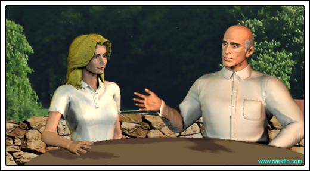
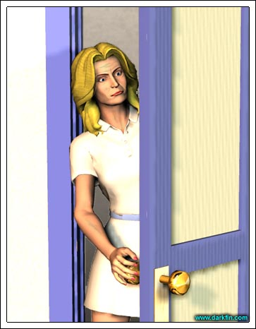

Joe (Glancing at his watch) As usual
Joe AAAAHH - I WILL NOT LISTEN TO YOU ANYMORE - GO BACK, BACK I SAY
Erika (Slumping on top of the black baby grand) Ow
Joe (Softly applauding) Brava, Vihar
Erika (Looking up) Joe... I didn't hear you come in
Joe It is hard to listen a million miles away - I recognize Monteverdi's "Vespo della Beata Vergine" but I am unaware of the last piece
Erika "The Stone"
Erika Dave Matthews Band
Joe Ah, very pretty - tell me, are you feeling any better?
Erika (Plinking a D flat note with her pinky) Not really - the headache still persists
Joe Did you take something for it?
Erika (Half smile) It is beyond the power of ibuprofen, I'm afraid
Joe Then, I have just the thing... COME
Joe This will drive the nastiness out of you
Erika (Picking at the garlic roll) Not to mention drive away everything else
Joe Enough talking... EAT
Erika (Coughing) That's pretty powerful chicken soup!
Joe You can thank my special paprika and mushrooms!
Erika (Raising an eyebrow) We'll see... I do appreciate you letting me stay here, the motion on my boat was not helping
Joe Not a problem - but I am curious as to why you did not choose to stay at your family's house?
Erika (Now eating heartily) I needed some peace and quite
Joe Surely you could have found it in on one of the three floors?
Erika Heh, you don't know my family
Joe (Bringing her a glass of iced tea) I think I know them better than you do
Erika (Covering her ears) Not now, Joe, please not now
Joe Very well... finish your soup
Erika I shall - I have a scenario for you...
Joe Chess, fencing, or something else?
Erika Maybe all three
Joe Go ahead
Erika Hypothetically, I am about to bring over a reluctant ally to my side but this ally is also a key player to the entire game, yet she does not realize it - by bringing her to my side, I am able to better protect her but then I leave myself more vulnerable and thus her as well... is this a wise move?
Joe (Pondering) No... but it is an essential one - correct?
Erika I'll find out, one way or the other
Joe (Watching her) You won't be in a position to find anything out as long as you continue to feel this way
Erika (Finishing her soup) You're right - I think I need to lie down now
Erika If I don't wake up myself, please pound on my door before this evening - I have a faculty meeting at the university... and thanks for the soup
Joe My pleasure, Vihar - get some rest!
Joe She is here and she is not well
Colleague #1 Would you look at this place? - my dorm building is bigger than all of it combined!
Erika (Lugging an olive duffle bag) Just remember, we're here for one semester and then we get the hell home
Colleague #2 I'm counting the days
Erika (Shaking her head) I could've had Australia or New Zealand but NOOO - my asshole adviser sticks me out here
Colleague #1 Probably because you didn't give him a blow job
Erika You gave him one and it didn't help you
Colleague #2 SLAM DUNK
Colleague #1 (Taking a seat on a stone bench in the courtyard) He probably resents you for being rich and beautiful
Erika I resent me for being rich and beautiful but you can't argue with my grades... in fact, that's really the reason I'm here - apparently, one of the IOMI staff members was impressed with my thesis and specifically asked for me on this assignment
Colleague #2 (Making kissing noises) Oooh
Colleague #1 I'm guessing he saw your picture in the department roster and thought "YAH, I GET ME SOME OF THAT, YAH YAH"
Erika NAH NAH, aint gonna happen - if he's lucky, I might let him carry my scuba gear
Colleague #1 SO GENEROUS OF YOU, RIK
Colleague #2 Not to mention, Griffin won't be too thrilled with this guy's "special request"
Erika Rif is in Europe, not much he can do about it either way - I, on the other hand...
Colleague #2 (Reading a guide book) Hey, do you two remember the difference between the Sinhalese and the Tamils?
Erika No, and quite frankly I could care less - I just want to know where the discos and the bars are!
Colleague #1 (High-fiving her) AMEN, SISTER
Da Silva There will be no drinking tonight for we will be diving the Maldives first thing tomorrow
Colleague #1 Oh, right
Colleague #2 Sorry
Erika (Checking the name on her notes) Are you Dr. Ranasinghe?
Da Silva No, I am Dr. Arjuna Da Silva and I assume you three to be the American students from Scripps?
Erika Correct
Da Silva Excellent, please follow me - I'll show you where to get settled... which one of you is Ms. von Meer?
Erika (Waving her hand once) That would be me
Da Silva If you don't mind, Sam is very anxious to meet you
Colleague #1 (Slapping Erika on the rear) I bet he is
Colleague #2 (Aside) Get that knife ready
Da Silva Please proceed to the blue building in the corner - don't worry, we'll take care of your belongings
Erika (Hesitant) Alright...
Erika If I find out either one of you dipped into my stash while I'm gone, you're going to get smacked something nasty!
Colleague #1 I'm counting on it!
Colleague #2 I apologize, Dr. Da Silva, we're a little giddy from our flight, we'll be more professional tomorrow, promise!
Erika (Laughing and heading off towards the blue building) SPEAK FOR YOURSELF
Erika OH SAM, SAMMY, SAMBO, SAMSONITE, SAM-I-AM - WHERE ARE YOU? - YOUR NEW STUDENT HAS COME TO LEARN
Erika (Looking around) Hmm
Erika MMM, I'm starving
Sam You should try the Rambutan, it is much sweeter
Sam The one with the red hairy skin
Erika Uh... I think I'll stick with the papaya
Sam (Taking the Rambutan and peeling it) You don't know what you're missing, Ms. von Meer
Erika You're Sam? - sorry, I mean Dr. Ranasinghe?
Sam (Extending her hand) Samadara Ranasinghe
Erika (Shaking it) Of course, it is a pleasure to meet you
Sam (Laughing) Indeed, the pleasure is all mine
Erika That's gorgeous
Sam Thank you, it's a family heirloom
Erika Damn, I was hoping they had them in a little shop around here - my mother's birthday is coming up
Sam (Taking a seat behind her desk with an amused expression) We have plenty of other interesting things around here, I can assure you
Erika (Also taking a seat) Great
Erika Um, I understand you specifically asked for me... why?
Sam (Eating another piece of fruit) I was impressed with your work
Erika So I've been told - but you must also be aware that my main area of focus is transgenic ichthyology... yours is marine geology and metallurgy
Sam It never hurts to broaden your scope
Erika (Raising an eyebrow) If you say so
Sam (Now rising) I do... please follow me, I'll give you a quick tour of the facilities you'll be working in
Erika Won't I be working with the others?
Sam Occasionally... but most of your time will be spent with me
Erika Oh
Sam Do you foresee a problem with that?
Erika Not yet
Pauline Joe, darling - would it be too much to ask for a slice of your wonderful poppyseed cake?

Joe (Taking a seat next to her) It's cooling as we speak, I'll bring you a fresh slice in a few minutes
Pauline (Brushing her face with her towel) Wonderful
Joe I see you were giving lessons to Ben & Claudia's children?
Pauline Yes, the oldest one has the raw talent but is much too lazy - the younger one will most likely make the juniors, the ambition is definitely there
Joe So young to be so driven
Pauline It's a good thing - I wish my own children were that driven to succeed
Joe You have a son that's a lawyer and a daughter with a PhD. - that's pretty successful in my book
Pauline (Patting Joe on the back) Well, that's your book, Padre
Joe Speaking of your daughter... she's here
Pauline You mean she's not at the lab? - will wonders ever cease!
Joe I think you should go to her
Pauline Why, so she can pretend I don't exist?
Joe You're being too hard on her, Pauline - she knows you exist... everyone knows you exist
Pauline Unfortunately, Joe, she's always off in her own world and she has made it abundantly clear that I am not a part of it
Joe Try being a part of it
Pauline Sorry, the only fish I want to know about are broiled in a light dill sauce
Joe No one is talking about fish - just LISTEN to her
Pauline (Fake shock) She speaks more than one phrase at a time?
Joe She does with me and she will for you... if you give her a chance - think of it as a match, bring your opponent into the net more often
Pauline (Kissing his bald head) Well, since you put it that way and because you're an adorable man who makes the best poppyseed cake, I shall
Joe (Holding his hand over his heart) You are a true champion, on and off the court!
Pauline And don't forget to mention stunningly attractive... so, where is my firstborn, playing chess or hiding in the piano bar?
Joe Erika is lying down in a suite... she's not feeling very well
Pauline (Jumping up) Take me to her!
Erika (Perspiring) Sam... no... NO - HELP ME - SAM, SAAAAAAM

Pauline Honey, relax... it was just a nightmare
Erika (Dazed) Mother?
Pauline Yes, Sweetie, I'm right here
Erika What are you doing?
Pauline Joe told me where to find you
Erika Did he now?
Pauline (Rubbing her daughter's forehead) He's worried about you and so am I
Erika There's no need to worry, I'm fine
Pauline Maybe we should have Stephanie take a look at you?
Erika Really, mother, I'm fine... I just have a little cold
Pauline (Covering her daughter up with her jacket) Who wouldn't sleeping in this freezing room half dressed - come on, we're going back to the house
Erika I can't... I have a faculty meeting tonight
Pauline (Gathering Erika's things) Tough, cancel it!
Erika But...
Pauline No "buts" - you are coming home and resting with your family where you belong
Pauline (Helping her daughter get dressed) No arguments, Erika
Erika Fine, I'm too weak to argue with you anyway
Pauline And, once you're feeling better, we're getting you out of your hiding holes and back to socializing
Erika (Pulling on her clothes) Please, I already have a headache
Pauline You haven't been out since the Museum Ball
Erika (Putting on her glasses) And we all know how well that went
Pauline We'll start off slow - your father ran into your brother's new dalliance on the beach the other night...
Erika Morrigan
Pauline Whatever her name is - he wants to have a family dinner at the house and insists on inviting her
Erika I suppose I could handle that
Pauline (Helping fix Erika's hair) Good
Erika Mom... could you rub my neck?
Pauline (Doing so) Good Lord, are you tense! - I'm going to get the name of Ursula's new chiropractor for you
Erika I don't need a chiropractor, I just need...
Pauline (Pausing) What?
Erika (Looking down) I don't know
Pauline Rikki... are you ever going to tell me about Sam?
Erika (Breaking away and heading for the door) I'll meet you at the car... I need to thank Joe for the soup
Pauline (Sighing) Yeah... thanks, Joe